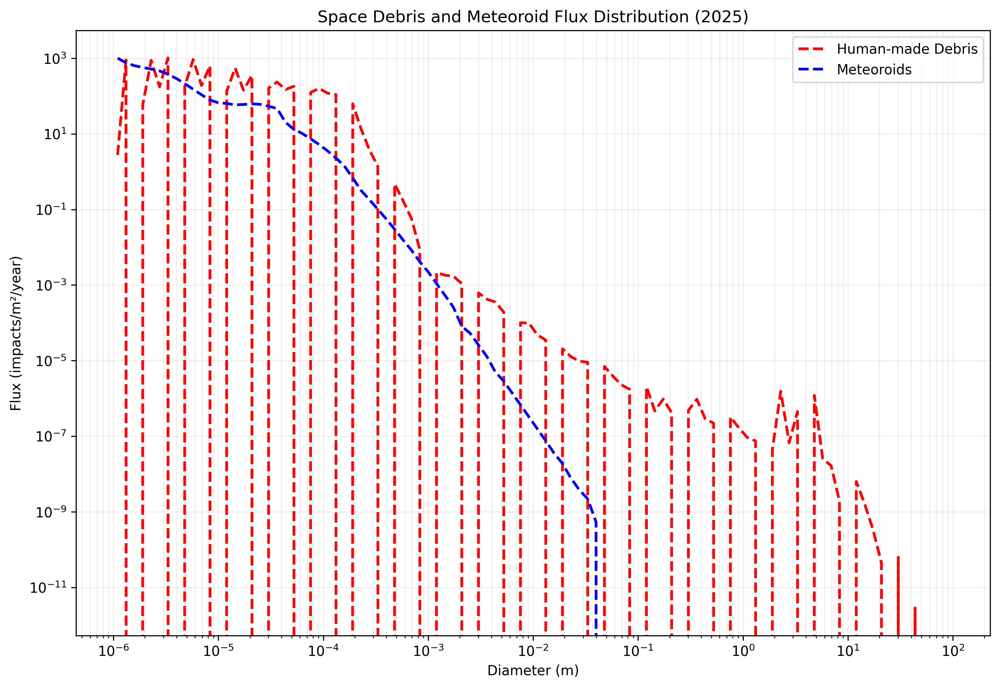
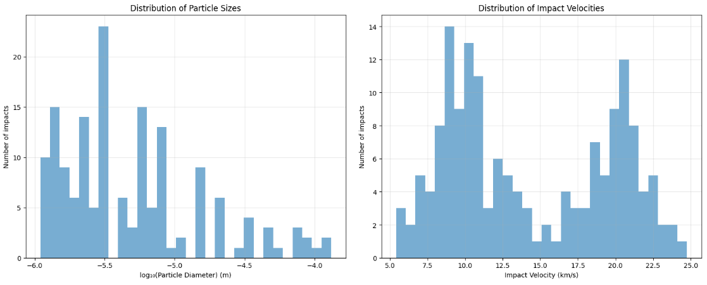
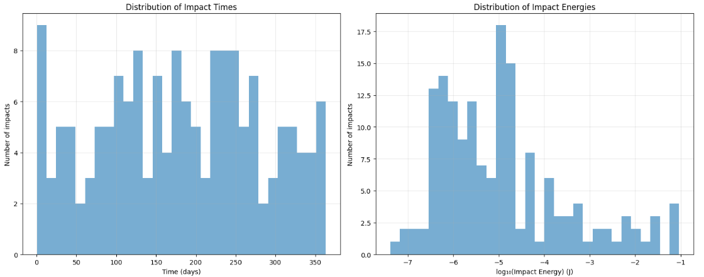

Space Debris
Predicting Space Debris Impact on Satellites Using Stochastic Simulation
Introduction
Space debris, also known as orbital debris, poses a significant threat to spacecraft in Earth’s orbit. These fragments—ranging from tiny paint chips to defunct satellites—travel at extremely high velocities and can cause damage or degraded performance upon impact. Understanding the likelihood and characteristics of such impacts is crucial for designing resilient spacecraft and ensuring mission success.
In this project, we utilise stochastic simulation techniques to model and predict the probability of space debris impacting a 1U CubeSat in Low-Earth Orbit (LEO). Using ESA’s MASTER (Meteoroid and Space Debris Terrestrial Environment Reference) tool, realistic flux data is generated for both human-made debris and meteoroids. The satellite’s exposure is then simulated to these threats over time, analysing key metrics such as impact frequency, energy, and penetration risk.
This blog post will walk you through the methodology, results, and implications of analysis, offering insights into how engineers and scientists can better prepare for the challenges of operating in an increasingly crowded orbital environment.
Methodology
Step 1: Generating Space Debris Flux Data
Satellite cross-section drag area
The cross-section of the spacecraft, computed with the ISO Standard Area (Flat Plate Model) for 1U spacecraft
\[A_{ISO} = \frac{1}{2}(xy + yz + xz)\]
The dimensions of a 1U cubesat are \[x = y = z = 0.1\text{ m}\]
Therefore
\[A_{ISO} = \frac{1}{2} (0.1 \times 0.1 + 0.1 \times 0.1 + 0.1 \times 0.1) = \frac{3 \times 0.01}{2} = 0.015 \text{ m}^2\]
Applying the correction factor1 for Cubesats to get an accurate projected area
\[A_{\text{Projected}} = 0.7295 \times A^{0.9624}_{\text{ISO}}\]
Substituting the earlier \(A_{\text{ISO}}\) value of \(0.015\text{ m}^2\) gives
\[A_{\text{Projected}} = 0.7295 \times 0.015^{0.9624}_{\text{ISO}} = 0.01281431879\]
Which gives us approximately \(0.01281 \text{ m}^2\) to 4 s.f.
Orbital Parameters
The satellite’s orbital parameters were defined as follows:
- Altitude: \(500 \text{ km}\)
- Inclination: \(97.4^{\circ}\)
- Eccentricity: \(0.01\)
- Cross-sectional area (drag): \(0.01281 \text{ m}^2\)
The flux data provides estimates of the number of impacts per square meter per year, categorised by particle diameter and source type (human-made debris or meteoroids). This information serves as the foundation for our stochastic simulation.
Generate data with ESA’s MASTER
With the orbital parameters, the following distribution (flux) data was generated with the tool, with the date starting at 2025-01-01 for the duration of 5 years. 
Step 2: Visualising Debris Flux Distribution
Using Python libraries like pandas, matplotlib, and seaborn, plot the flux distribution against particle diameters. The resulting graph highlights two critical trends:
- Smaller particles dominate the overall flux but carry less kinetic energy.
- Larger particles, though rarer, pose a greater threat due to their higher impact energies.
For example, our dataset revealed that: - Particle diameters ranged from \(1.1 × 10^{-6}\) meters to 91.2 meters. - Human-made debris accounted for up to 1,030 impacts/m²/year, while meteoroids contributed up to 1,010 impacts/m²/year.
These findings underscore the dual nature of the threat posed by space debris and meteoroids.

Note: Each step along the axis represents an order of magnitude change of the logarithmic scale of man-made debris.
Step 3: Running the Stochastic Simulation
Next, implement a discrete-event simulation using Python’s simpy library. The model incorporates several key components:
- Orbital Parameters: Satellite altitude, inclination, eccentricity, etc.
- Satellite Design Parameters: Cross-section, mass, material density, wall thickness, and attitude (e.g., nadir-pointing).
- Impact Dynamics: Calculations for impact velocity, kinetic energy, and penetration risk based on the modified Cour-Palais ballistic limit equation.
import simpy
import numpy as np
import pandas as pd
@dataclass
class OrbitalParameters:
"""
Orbital parameters for the satellite
"""
altitude: float
inclination: float
eccentricity: float = 0.0
raan: float = 0.0
argument_of_perigee: float = 0.0
@dataclass
class SatelliteParameters:
"""
Physical parameters of the satellite
"""
cross_section: float
mass: float
material_density: float
wall_thickness: float
attitude: str
@dataclass
class ImpactEvent:
time: float
diameter: float
source: str
velocity: float
energy: float
penetration_risk: bool
class Satellite:
def __init__(self, env, flux_data, orbital_params, satellite_params):
self.env = env
self.flux_data = flux_data
self.orbit = orbital_params
self.params = satellite_params
self.impacts = []
self.orbital_period = 2 * np.pi * np.sqrt((self.orbit.altitude + 6371)**3 / 398600.4418) / 60
self.orbital_velocity = np.sqrt(398600.4418 / (self.orbit.altitude + 6371))
self.meteoroid_velocity = 20.0
self.debris_velocity = 10.0
self.action = env.process(self.run())
def calculate_impact_velocity(self, source):
"""
Calculate impact velocity based on source and orbital parameters.
"""
base_velocity = self.meteoroid_velocity if source == 'Meteoroid' else self.debris_velocity
velocity_std = 2.0 if self.params.attitude == 'tumbling' else 1.0 if self.params.attitude == 'nadir-pointing' else 1.5
return np.random.normal(base_velocity, velocity_std)
def calculate_impact_energy(self, diameter, velocity, source):
"""
Calculate impact kinetic energy in Joules.
"""
density = 2500 if source == 'Meteoroid' else 2000
mass = (4/3) * np.pi * (diameter/2)**3 * density
return 0.5 * mass * (velocity * 1000)**2
def check_penetration_risk(self, diameter, velocity):
"""
Check if impact might penetrate satellite wall using simple ballistic limit equation.
"""
critical_diameter = (0.6 * (self.params.wall_thickness**0.5) * (self.params.material_density / velocity)**(1/3))
return diameter > critical_diameter
def generate_impact_time(self, flux):
"""
Generate time until next impact using exponential distribution.
"""
hourly_flux = flux / (365.25 * 24)
rate = hourly_flux * self.params.cross_section
return np.random.exponential(1/rate) if rate > 0 else float('inf')
def run(self):
"""
Main simulation process.
"""
while True:
human_made_time = self.generate_impact_time(self.flux_data['Human_made'].sum())
meteoroid_time = self.generate_impact_time(self.flux_data['Meteoroids'].sum())
if human_made_time < meteoroid_time:
time_to_impact = human_made_time
source = 'Human-made'
diameter = np.random.choice(self.flux_data['Diameter'], p=self.flux_data['Human_made']/self.flux_data['Human_made'].sum())
else:
time_to_impact = meteoroid_time
source = 'Meteoroid'
diameter = np.random.choice(self.flux_data['Diameter'], p=self.flux_data['Meteoroids']/self.flux_data['Meteoroids'].sum())
yield self.env.timeout(time_to_impact)
velocity = self.calculate_impact_velocity(source)
energy = self.calculate_impact_energy(diameter, velocity, source)
penetration_risk = self.check_penetration_risk(diameter, velocity)
impact = ImpactEvent(
time=self.env.now,
diameter=diameter,
source=source,
velocity=velocity,
energy=energy,
penetration_risk=penetration_risk
)
self.impacts.append(impact)
def run_simulation(flux_data, duration_years=1.0):
"""
Run the satellite debris impact simulation.
"""
orbit = OrbitalParameters(altitude=500, inclination=97.4, eccentricity=0.01, raan=0.90, argument_of_perigee=0)
satellite = SatelliteParameters(cross_section=0.01281, mass=3.0, material_density=2700.0, wall_thickness=0.002, attitude='tumbling')
duration_hours = duration_years * 365.25 * 24
env = simpy.Environment()
sat = Satellite(env, flux_data, orbit, satellite)
env.run(until=duration_hours)
return sat.impactsThe simulation proceeds as follows:
- For each time step, it determines whether the next impact comes from human-made debris or meteoroids.
- It randomly selects a particle diameter based on the flux distribution.
- It calculates the impact velocity, energy, and potential for wall penetration.
- The process repeats until the specified simulation duration is reached.
The simulation simulates debris impacts over one year.
Results
After simulating one year of operation, the following key results emerged:


Total Impacts: The satellite experienced 120 impacts, with nearly equal contributions from human-made debris (62 impacts) and meteoroids (58 impacts).
Particle Size Distribution:
- Average particle diameter: 0.000012 meters (12 micrometers).
- Largest particle: 0.000132 meters (132 micrometers).
Impact Velocities:
- Mean velocity: 14.28 km/s.
- Maximum velocity: 24.76 km/s.
Kinetic Energy:
- Most impacts involved very low energies (< 1 Joule), consistent with the prevalence of small particles.
- One notable exception was a maximum recorded energy of 0.36 Joules, which could potentially damage sensitive equipment.
Penetration Risk: None of the simulated impacts exceeded the critical threshold required to penetrate the satellite’s walls, thanks to its robust design featuring a 2 mm thick aluminum shell.
Mean Time Between Impacts: On average, the satellite faced an impact every 2.30 days.
Discussion
The simulation demonstrates the dynamic interplay between particle size, velocity, and impact energy. While most impacts involve harmless microparticles, even rare collisions with larger objects can have severe consequences. Engineers must therefore prioritise shielding strategies and redundancy measures when designing spacecraft for LEO missions.
Additionally, the near-equal contribution of human-made debris and meteoroids highlights the importance of addressing both natural and artificial threats. Efforts to mitigate space debris—such as active removal initiatives and stricter regulations on satellite disposal—are essential for safeguarding future missions.
Conclusion
This project underscores the value of stochastic simulations in assessing space debris risks. By combining real-world flux data with advanced modeling techniques, we gain valuable insights into the challenges faced by spacecraft in LEO. As humanity continues to explore and utilise outer space, tools like these will play a vital role in ensuring safe and sustainable operations.
References
Footnotes
Kerr, E., & Macdonald, M., 2015. IAC-15-A6.4.6 Page 1 of 6 IAC-15-A6.4.6 IMPROVING THE ACCURACY OF GENERAL PERTURBATIONS METHODS FOR SPACECRAFT LIFETIME ANALYSIS..↩︎